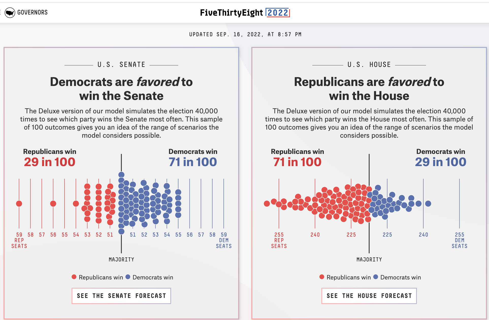
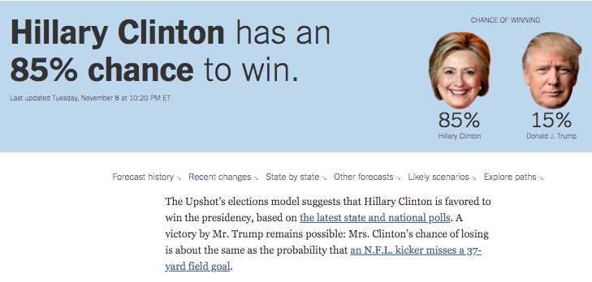
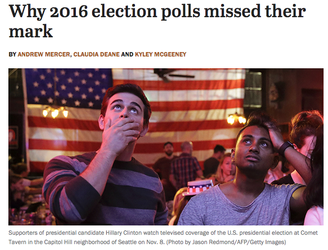
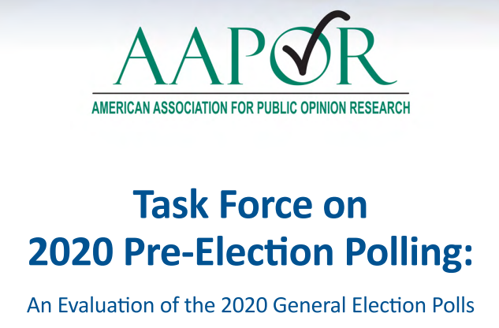
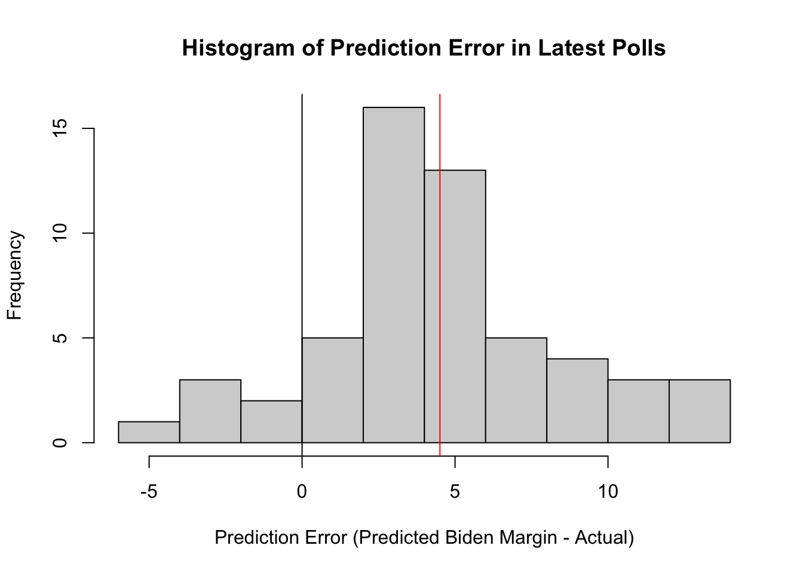
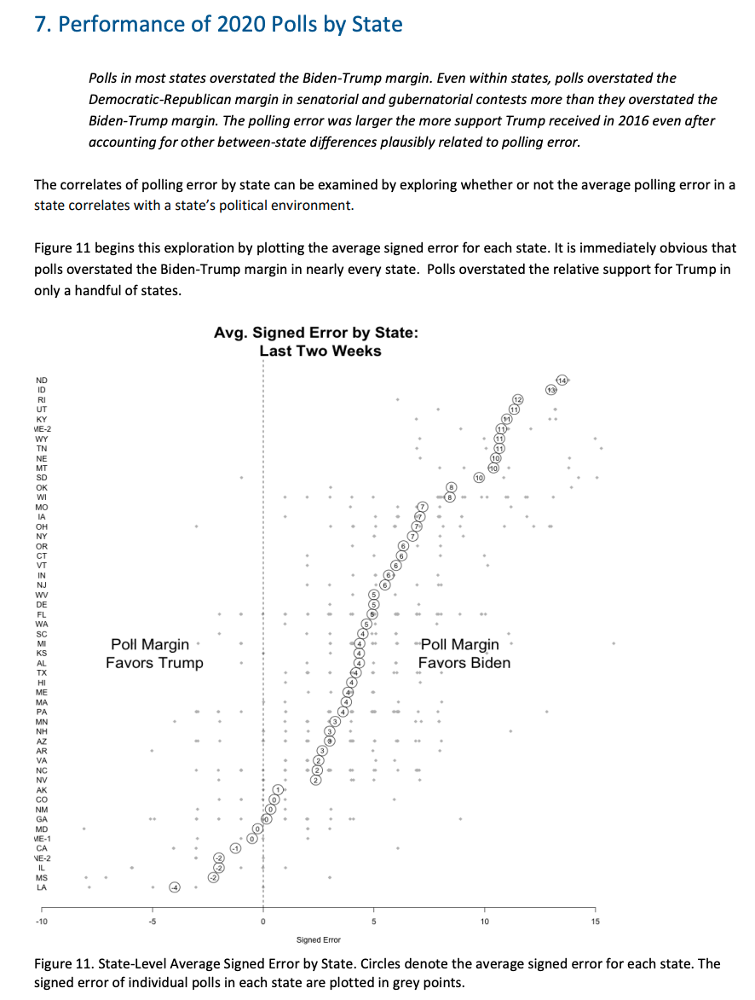
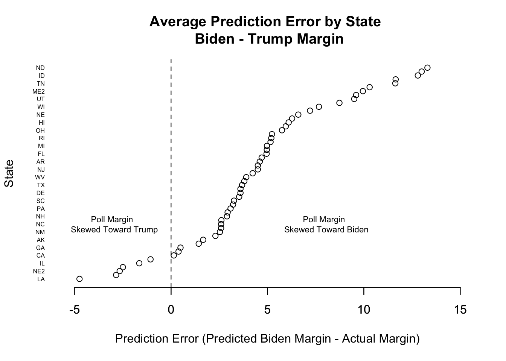

results2020 <- read.csv("elecresults2020.csv", stringsAsFactors = T)7 Prediction
In this section, we move to our next social science goal
- Describe
- Explain, evaluate, and recommend \(\rightarrow\) Causality
- Predict
- Discover
Most of the tools we have been working on thus far have focused on first describing our data and then conducting tests through different types of comparisons and visualizations, in order to assess a deductive hypothesis, explaining the relationship between two variables.
Now we turn to a different goal.
Recall the difference between Correlation vs. Causality using our graphic showing the popularity of Duck Dynasty in different parts of the country. In 2016, researchers at the NY Times noticed that areas in the country where the television show Duck Dynasty was popular also tended to support Donald Trump at higher rates.

For those used to working with the goal of explanation, shifting to prediction and classification may mean we need to shift what types of information we think is important.
- Correlation: Areas that watch Duck Dynasty are more likely to support Trump (degree to which two variables ``move together”)
- Causality: Watching Duck Dynasty (vs. not watching) causes you to support Trump.
If we were interested in the goal of explaining voting decisions (what causes someone to vote a certain way?), we might not care if someone watches the show. However, if we were just interested in predicting vote share or voting decisions, a strong correlation could still be useful. Without spending a single dollar on surveying a community, we might have a general sense of their support for a candidate.
7.1 Prediction Overview
Our goal: Predict (estimate/guess) some unknown using information we have as accurately and precisely as possible
- Prediction could involve estimating a numeric outcome. Alternatively, prediction also involves classification– predicting a categorical outcome (e.g., prediction of who wins vs. who loses).
Some political science examples of this might include
- Categorizing comments on social media as being toxic/nasty/uncivil

- Detecting Fake news and misinformation

- Forecasting election results

Other examples
- Trying to detect hate speech online
- Predicting where or when an attack might occur
- Trying to classify a large amount of text into subject or topic categories for analysis
What other types of things might we try to predict or classify in political science?
7.2 Process of Prediction
Predict (estimate/guess) some unknown using information we have – and do so as accurately and precisely as possible.
- Choose an approach
- Using an observed (known) measure as a direct proxy to predict an outcome
- Using one or more observed (known) measures in a regression model to predict an outcome
- (Beyond the course) Using a statistical model to select the measures to use for predicting an outcome
- Assess accuracy and precision
- Prediction error: \(Prediction - Truth\)
- Bias: Average prediction error: \(\text{mean}(Prediction - Truth)\)
- A prediction is `unbiased’ if the bias is zero (If the prediction is on average true)
- Root-mean squared error: \(\sqrt{\text{mean}((Prediction - Truth)^2)}\)
- Like `absolute’ error– the average magnitude of the prediction error
- the typical distance the prediction is from the truth
- Confusion Matrix
- A cross-tab of predictions you got correct vs. predictions you got wrong (misclassified)
- Gives you true positives and true negatives vs. false positives and false negatives
- Iterate to improve the prediction/classification
- Often, we repeat steps 1-3 until we are confident in your method for predicting.
- Danger Zone: Eventually, after you have tested the approach and are satisfied with the accuracy, you may start applying it to new data for which you do not know the right answer.
7.3 Example: Forecasting 2020 US Election based on 2016 Results
Let’s try to predict the 2020 election results using just the 2016 results.
For a video explainer of the code for this application, see below. (Via youtube, you can speed up the playback to 1.5 or 2x speed.)
Variables
state: state or state and districtcalled: result of 2020 electionmargin2016: two-party margin in 2016. Positive values indicate Democratic win, negative indicate Republican winEV: Electoral votes associated with a state/ district of a state

sum(results2020$EV[results2020$called == "R"])[1] 232sum(results2020$EV[results2020$called == "D"])[1] 3067.3.1 Choose Approach
- Choose an approach: Using an observed (known) measure as a direct proxy to predict an outcome
- Let’s use the 2016 result as a direct proxy to predict 2020.
results2020$predicted2020 <- ifelse(results2020$margin2016 < 0, "R", "D")
results2020$predicted2020 <- as.factor(results2020$predicted2020)7.3.2 Assess Accuracy
- Assess accuracy
What proportion of states did we get correct?
mean(results2020$predicted2020 == results2020$called)[1] 0.8928571Classification
We want to correctly predict the winner of each state
Prediction of binary outcome variable = classification problem
- true positive: correctly predicting Biden to be the winner
- false positive: incorrectly predicting Biden to be the winner (misclassification)
- true negative: correctly predicting Biden to be the loser
- false negative: incorrectly predicting Biden to be the loser (misclassification)
We define one outcome as the “positive” and one as the “negative.” Here we will say a Biden win is the positive and a Trump win is the negative. You could flip this and make a Trump win the positive and a Biden win the negative. This terminology comes from settings where there is a more objective positive vs. negative result (e.g., a positive medical test result) than most social science settings. The key thing is that we are trying to identify different types of correct classifications vs. misclassifications.
Confusion Matrix: Tells us how we went right, how we went wrong.
table(predicted=results2020$predicted2020, actual = results2020$called) actual
predicted D R
D 22 0
R 6 28Which states did we get wrong?
results2020$state[results2020$predicted2020 != results2020$called][1] Arizona Georgia Michigan
[4] Nebraska 2nd District Pennsylvania Wisconsin
56 Levels: Alabama Alaska Arizona Arkansas California Colorado ... Wyoming7.3.3 Iterate to improve predictions
Start back at step one. We continue to repeat steps 1 and 2 until we are confident in our predictions.
How could we improve our predictions of elections? What other information could we use?
7.4 Example: Using polls to predict the 2020 election results
For a video explainer of the code for this application, see below. (Via youtube, you can speed up the playback to 1.5 or 2x speed.)
Many forecasters use pre-election polls in their models to predict election outcomes. In 2016 and 2020, polling-based forecasts received a lot of criticism
Prior to the 2016 elections, forecasts that used polls seemed confident that Hillary Clinton would win the election. Political analysts also seemed to think the polls were favorable to Clinton.

We all know that afterwards, Clinton did not win.

This led public opinion scholars and practitioners to do a deep investigation into the quality of pre-election polling. Like 2016, following the 2020 election, a similar team investigated the quality of pre-election polling in 2020. Here, while many polls pointed to a favorable outcome for Biden, the results seemed closer than one might have anticipated.

The results of these findings are in the AAPOR report.
7.4.1 Choose an approach: Let’s analyze some polls
We are going to do our own analysis of pre-election polls as a prediction of the 2020 election results. We will use a large number of state polls conducted from May-November 2020 that were made available to the public on FiveThirtyEight.
polls2020 <- read.csv("pollsandresults2020.csv", stringsAsFactors = T)Variables
TrumpPoll, BidenPoll: Poll-based vote share for Biden or TrumpTrumpResult, BidenResult: Actual vote share for Biden or TrumpEV: Electoral votes associated with state/CDdays_to_election: Days until Election Daystateid: state abbreviationfte_grade: FiveThirtyEight Pollster gradesample_size: Poll sample size
Can we predict the outcome of an election using polls?
Let’s create our outcome variables.
## Biden's margin of victory (or defeat) in the polls
polls2020$polldiff <- polls2020$BidenPoll - polls2020$TrumpPoll
## Biden's margin of victory (or defeat) in the actual election result
polls2020$resultdiff <- polls2020$BidenResult - polls2020$TrumpResultPositive numbers mean Biden was ahead/won. Negative mean Trump was ahead/won.
Let’s predict the amount of electoral votes for Biden based on polls in each state close to Election Day.
Let’s start with 1 state.
- Let’s grab all polls within 2 weeks of the election or the most recent day polled (for areas that did not have recent polls)
## Iteration vector
states <- unique(polls2020$stateid)
states[1][1] AL
55 Levels: AK AL AR AZ CA CO CT DC DE FL GA HI IA ID IL IN KS KY LA MA ... WY## Subset to just Alabama
subdata <- subset(polls2020, stateid == states[1])
## Further subset to the "latest polls"
subdata <- subset(subdata, days_to_election < 15 |
days_to_election == min(subdata$days_to_election) )Now let’s extract the actual margin for Biden, the poll-based predicted margin, and finally, let’s assign electoral votes based on our prediction.
## Find the margin for the actual result
result.marginAL <- mean(subdata$resultdiff)
result.marginAL[1] -25.4## Find the margin for our prediction
polls.marginAL <- mean(subdata$polldiff)
polls.marginAL[1] -21.16667## Allocate votes for Biden according to the margin
bidenvotesAL <- ifelse(mean(subdata$polldiff) > 0,
unique(subdata$EV), 0)
bidenvotesAL[1] 0We predicted Biden would lose Alabama because the polls.marginAL is negative. Therefore, we assigned Biden 0 electoral votes in this example.
7.4.2 Loop through all states
## Iteration vector
states <- unique(polls2020$stateid)
## Container vector
polls.margin <- result.margin <- bidenvotes <-
rep(NA, length(states))
names(polls.margin) <- names(result.margin) <-
names(bidenvotes) <-as.character(unique(states))
## Loop
for(i in 1:length(states)){
subdata <- subset(polls2020, stateid == states[i] )
subdata <- subset(subdata, days_to_election < 15 |
days_to_election == min(subdata$days_to_election) )
result.margin[i] <- mean(subdata$resultdiff)
polls.margin[i] <- mean(subdata$polldiff)
bidenvotes[i] <- ifelse(mean(subdata$polldiff) > 0,
unique(subdata$EV), 0)
}
sum(bidenvotes) # predicted[1] 3517.4.3 Check Accuracy
7.4.3.1 Quantitative Measures of Accuracy
Let’s calculate two common measures of prediction error: bias (the average prediction error) and root-mean-squared error (a typical magnitude of the prediction error).
## Calculate Bias (Predicted Biden - True Biden)
predictionerror <- polls.margin -result.margin
bias <- mean(predictionerror)
## Root Mean Squared Error
sqrt(mean((predictionerror)^2))[1] 6.052873On average, the poll-based prediction was more than 4 points larger for Biden’s margin than the actual result.
We can create a plot similar to the left plot from the AAPOR report.

## Histogram of Prediction Errors to Show Bias
hist(predictionerror,
xlab = "Prediction Error (Predicted Biden Margin - Actual)",
main = "Histogram of Prediction Error in Latest Polls")
abline(v=mean(predictionerror), col="red")
abline(v=0)
Bonus: Another way to visualize the prediction error
- Let’s create our own version of this AAPOR Plot

We will plot the prediction error on the x-axis, and list the corresponding states on the y-axis.
- We will sort the prediction error to make it easier to see the pattern of results.
plot(x=sort(predictionerror), y=1:length(predictionerror),
main="Average Prediction Error by State \n Biden - Trump Margin",
ylab="State",
xlab="Prediction Error (Predicted Biden Margin - Actual Margin)",
yaxt="n",
bty="n",
xlim = c(-5, 15))
abline(v=0, lty=2)
axis(2, 1:length(predictionerror), labels=names(sort(predictionerror)), las=1,
cex.axis=.5,tick=F)
axis(1, seq(-5, 15, 5), seq(-5, 15, 5))
text(-3, 15, "Poll Margin \n Skewed Toward Trump", cex=.7)
text(8, 15, "Poll Margin \n Skewed Toward Biden", cex=.7)
7.4.3.2 Classification
Instead of quantifying how far we were off, let’s see where we were right vs. where we were wrong.
Classification
- true positive: correctly predicting Biden to be the winner
- false positive: incorrectly predicting Biden to be the winner
- true negative: correctly predicting Biden to be the loser
- false negative: incorrectly predicting Biden to be the loser
Confusion Matrix
Let’s classify our predictions.
actualwins <- ifelse(result.margin > 0, "Biden Won", "Trump Won")
predictedwins <- ifelse(polls.margin > 0, "Biden Won", "Trump Won")table(predictedwins, actualwins) actualwins
predictedwins Biden Won Trump Won
Biden Won 28 3
Trump Won 0 24Where did the polls get it wrong?
actualwins[actualwins != predictedwins] FL ME2 NC
"Trump Won" "Trump Won" "Trump Won" What’s your conclusion?
- Are the polls alright?
- How could you improve the prediction?
- Wait a second… why even poll?